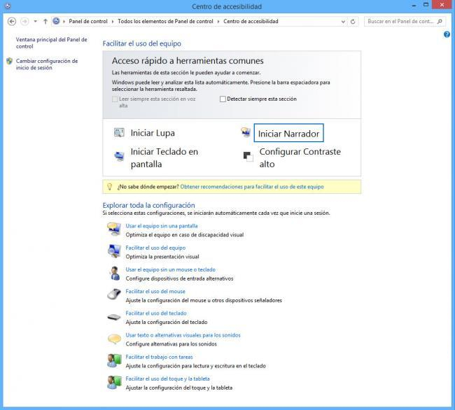

No todas las personas tienen la misma facilidad para manejar un ordenador: ya sea por edad o alguna condición física. Windows incorpora, desde hace muchos años, una serie de herramientas que harán accesible a todos los usuarios los sistemas informáticos sin más trabas que las ganas de disfrutar de su equipo.
El Centro de Accesibilidad de Windows pone a nuestro alcance varios tipos de herramientas diseñadas a medida de las necesidades personales más variadas, algunas de ellas son las más comunes: como es el caso de la Lupa, el Narrador, el Teclado en pantalla y el uso del Contraste Alto.

Lupa
Con la lupa tenemos la posibilidad de aumentar todo lo que veamos en pantalla para poder leer los textos y ver los gráficos o imágenes a un tamaño mayor al habitual. Podremos modificar el tamaño o indicar la forma en la que queremos verlo (un recuadro, de forma flotante, etc).
Narrador
El Narrador nos ayudará de forma auditiva a saber cuales son todos los menús y ventanas abiertas en Windows, si vamos pasando por todas las opciones con la ayuda de nuestro teclado o ratón y presionamos espacio para acceder a ellas. La voz narrará en nuestro idioma predefinido todos y cada uno de los apartados en los que nos encontramos y su función.
Teclado en pantalla
El Teclado en pantalla, que es de sobra conocido por los usuarios de tablets con Windows, nos permitirá teclear cualquier palabra o cifra gracias al uso de un teclado virtual que aparecerá en la pantalla de Windows, es de mucha ayuda también si nuestro teclado principal sufre una avería y nos encontramos en una urgencia.
Contraste Alto
El Contraste alto permite a los usuarios con problemas visuales activar un tema de color contrastado en los menús y ventanas de Windows para poder identificar mejor cada elemento.